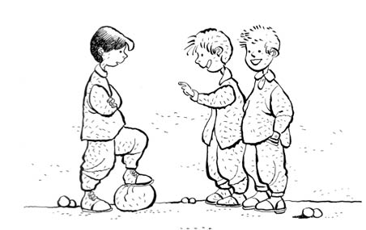

PİLLİ
Ufaktan mahalleye adapte oldum. Bunda babamın, İzmir’den ayrılırken spor salonundan ıskartaya çıkarılmış olduğunu tahmin ettiğim yırtık pırtık voleybol topunu getirmesinin de büyük etkisi var; çıkıyorum mahalleye, elimde top.
“Maç yapalım mı?” dedi çocuklar. Hiç tanışmaya falan gerek yok, direkt oynamaya başlarsın. Tanışma falan daha sonra.
“Kaleye geçmem” dedim. Kitabı okuyan kızlar raconu bilmiyor olabilirler; en önemli kural, topu olan kaleye geçmez. Bunu bilmiyorsan yazıklar olsun, ezerler adamı, ömrün kalede geçer.
Bak mahalleden Bülent var, onu sadece şöyle hatırlıyorum; topu olmasına rağmen kaleye geçerdi. Çok acayip bir durum, mahallede hiçbir zaman yer edinemedi kendine. Çocuğu normalde hayatta hatırlamam ama bu yüzden hatırlıyorum. Hatta “Çok iyi kalecisin oğlum sen” gazlarına inanıp babasına kaleci eldiveni aldırmıştı. 1974-1978 yılları arasında tüm Bursa civarında kaleci eldiveni olan tek çocuk buydu. İşin başka acayip tarafı, mahalle maçları çok önemlidir, o maçta mahallenin en iyi kalecisi kendini feda eder ve kaleye geçer, bu adam eldiveni var diye mahalle takımının kalesini koruyordu, sonra baktık eldivenin kaleciliğe bir katkısı yok, yedeğe geçti. Sonuç: Topu olan kaleye geçmez! Bunu unutmayın; kulağınıza küpe, burnunuza piercing olsun.
Başladık oynamaya... Kimler var mahallede; Yılmaz Abi -profesör gibi tipi vardı-, Ahmet Abi, Şahin Abi... (İrlanda kızılı saçları vardı. Onların adlarını hiç unutmam çünkü o dönem bir cinayet işlendi, gazetelerin ilk sayfasında çıktı. Cinayet acayip bir şey o zamanlar, şimdiki gibi vur-yat-çık kampanyaları yok. Katili yakaladılar, adı Ahmet Şahin!) Atilla var kankam, abisi Ali has adam. Derme çatma bir evde otururlardı. Babaları Turan Amca bakkal açtı sonra. Gönlü gani, Allah gani gani rahmet eylesin. Yekta var; sarışın, gözlüklü, babası denizci subayı. Hakan, babası otel sahibi Çekirge’de (Öz Hayat Otel), Hasan, Mete, Nevzat, Enis falan...
Şimdi, iyi top oynuyorsan mahallede yer edinirsin... Ben canımı dişime taktım, her topa koşuyorum. Normalde pas mas vermem, pas atıyorum falan, geriye bile koştuğum oluyor. “Beyler, burun vurmak yok! Yalnız burun vurmak varsa, biz de vururuz!” Bu da şu demek (kızlara açıklıyorum): Ayağının burnuyla vurduğunda topun hızlı gittiğine inanılır -batıl inanç-; biri sert bir şut çektiğinde ne kadar kabiliyetsiz adam varsa -hani aslında ben de vurabilirim de hızlı vurmuyorum babında- bu tür laflar eder maçta.
Neyse, ben o gün mahalle takımına yeni bir kan olarak görüldüm. Bir iki çelme yedim, yedirenlere de gerekli dayılanmaları yaptım. Baktılar muhallebi çocuğu değilim, küfür falan da ettim iyice, aralarına aldılar. Bir ara gol attım, abilerden biri “Vaaay millî” dedi, sonra bağırdı: “Len... Millî oyuncu gibi oynuyor bu!” Onura bak!
Maçtan sonra oturduk bir taşın üstüne. Yılmaz Abi, “İyi oynuyorsun, Mutluevler’e karşı eksik adam olduğunda oynatırız seni belki millî” dedi. Bu haber süper! Mahalle maçında Kutluevler takımında oynama ihtimalim var. Abilerin arasında biz (bu arada “biz” olduk) minikleriz normalde, “Seni asıl takımda oynatırız” diyor! Bu arada kimse adımı sormuyor, sorsalar anlatacak çok şeyim var. Herkes bana “Millî, bak ne diyeceğim” falan diyor. Benim isim konuldu: Millî. (“Milli” değil, ikinci i’nin üzerinde şapka mı var, lastik mi var bilmiyorum ama o uzun söyleniyor.)
İkinci gün çıktık oynamaya dışarı, “Millî gel, Millî git”... “Oğlum senin adın ne?” diyen yok. Bu arada mahallede “Optik”, “Sarı” gibi lakapları olan sürüyle adam var. Ben de sesimi çıkarmadım, bir süre katlanacağız. Aslında havalı da isim; iyi top oynuyorum sonuçta, onu anlatıyor, karizmayı çok bozmuyor, ağırlığım var.
Bir gün...
Evet, bir gün, gene böyle al külah ver takke oyun oynarken biri döndü bana “Lan Pilli” dedi. Herkes kak kuk güldü, kimse gülmese de iyi espri, cuk oturdu. Biri daha “Pilli” (i’de uzatma, şapka falan yok, bildiğin kapak var) dedi, yine herkes güldü. Ben hiç tepki vermedim. On yaşındayım, en az beş yıllık mahalle, sokak deneyimim var; kızdığını belli ettiğin an daha çok yüklenirler. “Hadi cilli oynayalım” diye konuyu dağıttım. “Olur leen Pilliii, oynayalım” dedi biri ve marka tescilim o gün yapılmış oldu; bizim havalı “Millî” oldu “Pilli”. Hem de şarjlı falan değil, bildiğin düz pil.
Ben ne vartalar atlattım, bunu da atlatırım diyeceğim ama siz de direkt “Markan da Varta mı?” diyeceksiniz diye girmiyorum konuya.
Çok aşağılayıcı... Adı Ahmet Şerif İzgören konulmuş, Çiğli Lojmanları’nda herkesin titrediği (gülmekten) yiğide, mahallede “Pilli” diyorlar. Hem de “Len”lisinden. Len Pilli...
Gece uykularım kaçıyor. Acayip tadım kaçtı. Adımı bilen yok! Bir adamın yaptığı komiklik, tüm mahalle kariyerimi etkiledi. Bu isimle kimse beni sallamaz. Eski Garaj’ın oradaki koridora taşınmaya razı olacak duruma geldim. İlk anda da tepkiyi koyamadım, kıllandırmayayım adamları diye.
Neyse, bir gün söyledim, “Bana Pilli demeyin, benim adım Şerif! Şerif deyin bana” dedim. “Olur Pilli... İstiyorsan öyle deriz” dedi birisi. Hır gür düzelmedi olay.
Sonunda, bu konuyu bir kahraman nasıl çözerse öyle çözdüm. Gittim, babama söyledim, o da gitti, “Bu çocuğa ‘Pilli’ denmeyecek, ona göre!” dedi...
Ne bakıyorsunuz?